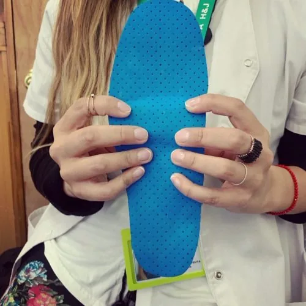

Plantillas de farmacia o a medida: cuándo tiene sentido cada una
No todas las plantillas hechas a medida son necesarias, y no todas las de farmacia son inútiles. La diferencia está en qué problema tienes.
 Por Monserrat Velásquez Hernández, terapeuta ocupacional.
Por Monserrat Velásquez Hernández, terapeuta ocupacional.
Publicado el

Empecemos por lo honesto
Hago plantillas a medida, así que lo lógico sería que te dijera que las prefabricadas no sirven. No es verdad, y prefiero decírtelo ahora.
Una plantilla prefabricada puede ser suficiente en situaciones concretas. El problema es que se venden como si sirvieran para todo, y así se puede terminar comprando varias antes de dar con lo que el pie necesitaba.
Qué es una plantilla prefabricada
Es una plantilla fabricada en serie por tallas. Viene con una forma de arco promedio y un grosor parejo, a veces con una zona de gel en el talón.
Está diseñada para el pie promedio de esa talla. Si tu pie se parece a ese promedio y lo que buscas es amortiguación general, puede hacer un trabajo razonable.
Lo que no puede hacer es descargar un punto concreto de tu planta, ni sostener un arco que tiene tu altura, ni tratar distinto tu pie izquierdo de tu pie derecho. No es un defecto de fabricación: es lo que significa fabricar en serie.
¿Te está pasando a ti?
Si lo que acabas de leer se parece a lo que sientes, escríbeme y cuéntame desde cuándo te pasa. Así vemos si unas plantillas a medida te sirven.
Qué es una plantilla a medida
Es una plantilla confeccionada sobre la forma de tus dos pies, después de una evaluación que muestra dónde cae tu peso, dónde sobra presión y qué hay que sostener.
Eso permite tres cosas que la otra no permite:
- Descargas puntuales. Rebajar el material justo bajo la zona que duele. Unos milímetros mal puestos y la descarga no sirve; por eso importa que salga de tu pie.
- Asimetría. Tu pie izquierdo y tu derecho no son iguales, y muchas veces solo uno duele.
- Ajuste posterior. Si algo molesta cuando ya la estás usando, escríbeme y vemos cómo ajustarla. Una prefabricada no se modifica: se cambia por otra.
Cuándo tiene sentido cada una
Puede bastar una prefabricada si:- No tienes dolor y solo buscas algo más cómodo.
- Tu molestia es leve, reciente y no tiene un punto concreto.
- Es una situación puntual: un viaje, un evento, unos días de más caminata.
- Ningún profesional te ha indicado nada específico.
- Tienes un diagnóstico: fascitis plantar, metatarsalgia, espolón, pie cavo.
- Te duele siempre en el mismo punto.
- Ya probaste prefabricadas y el alivio duró poco o el dolor se cambió de lugar.
- Tus dos pies son claramente distintos entre sí.
- Tienes durezas que vuelven siempre al mismo sitio.
- Un médico o kinesiólogo te las indicó.
- Pasas muchas horas de pie o corres muchos kilómetros a la semana.
Una señal que conviene reconocer
Hay un patrón bastante reconocible: la persona compró una plantilla de farmacia, sintió alivio la primera semana, y después el dolor volvió o se mudó a otro punto de la planta.
Eso no significa que la plantilla fuera mala. Significa que amortiguar no era lo que ese pie necesitaba: necesitaba que se le quitara presión a una zona concreta y se repartiera hacia otra. Y eso no se puede hacer en serie.
Si te pasó exactamente eso, ya tienes bastante información sobre qué probar después.
Sobre la diferencia de precio
Sí, una plantilla a medida cuesta más que una de góndola. Lo que conviene sumar es lo que se gasta si hay que probar varias prefabricadas que no alivian, más el tiempo con dolor entremedio.
Mi recomendación es simple: si no tienes dolor, prueba lo barato primero. Si tienes dolor con un punto claro, o un diagnóstico, empezar por lo barato suele salir caro.
Este artículo es informativo. Las plantillas complementan la indicación de tu médico o kinesiólogo; no reemplazan una consulta.
Si quieres ver cómo trabajo esto: cómo son mis plantillas a medida, y también la evaluación de pisada a domicilio.